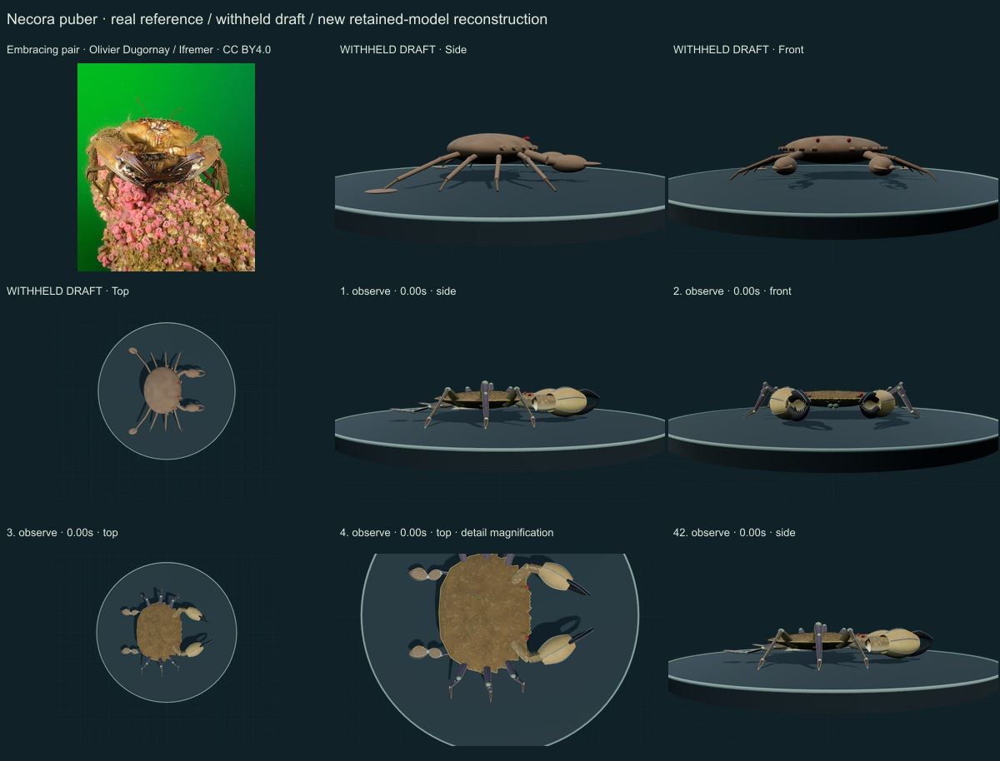
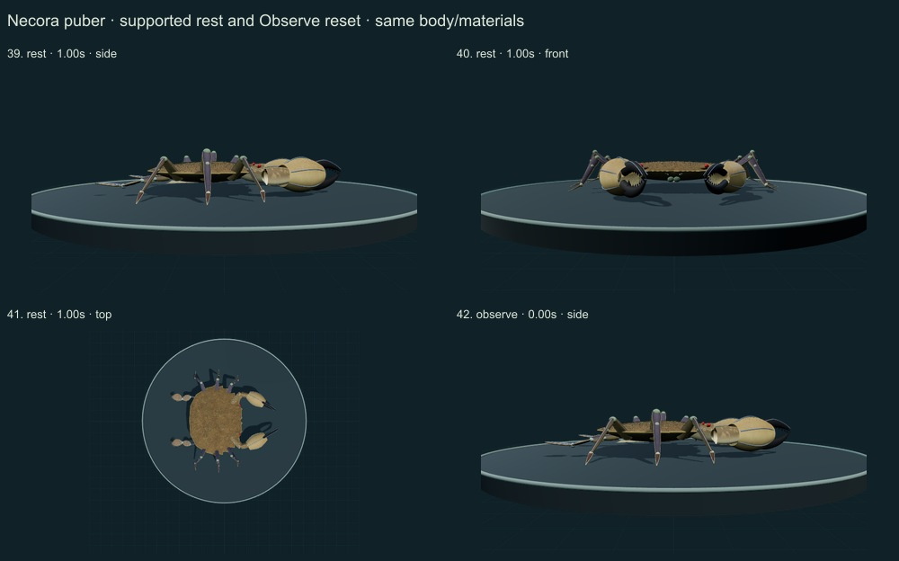
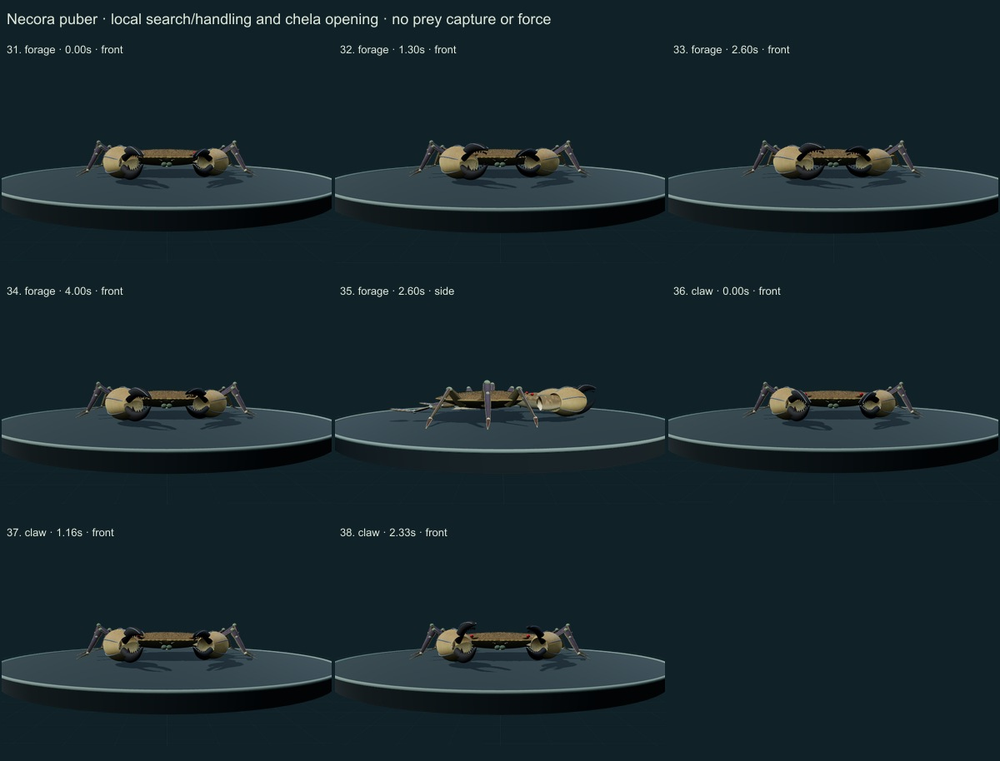
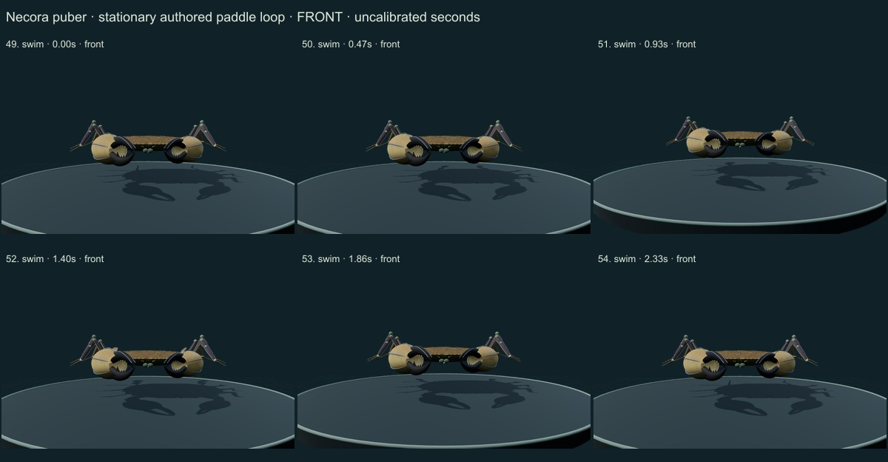
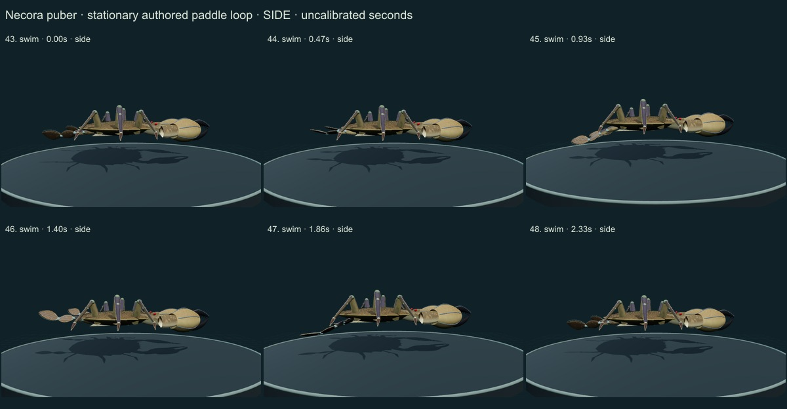
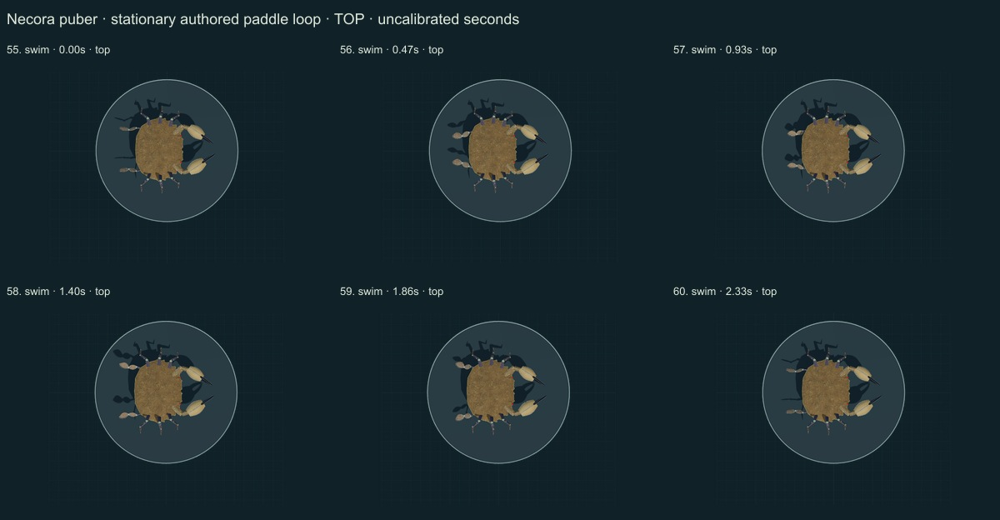
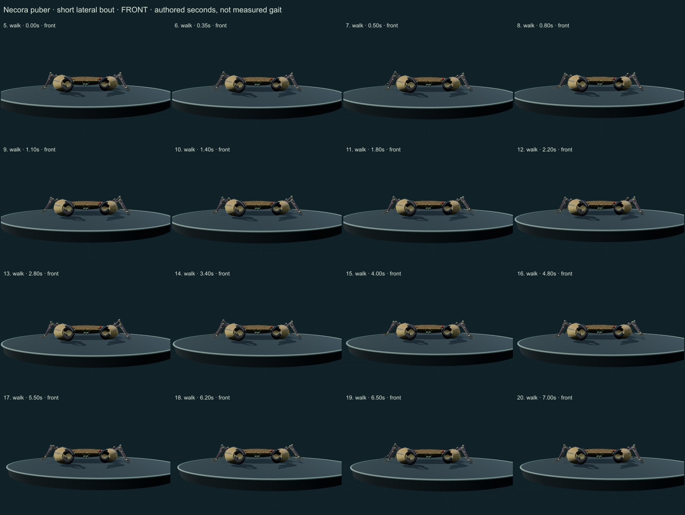
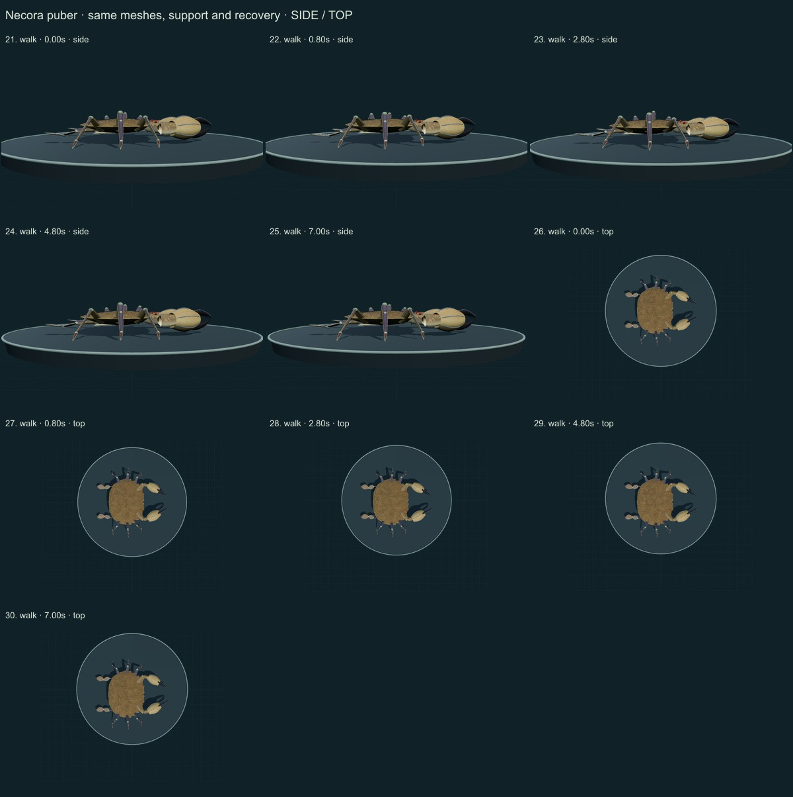

This three-species release reaches 257 / 550 after verified publication. 43 saved drafts remain withheld; 293 species remain to reach 550, including 250 without saved drafts. Release register. This record is an unmeasured educational reconstruction, with incomplete fine anatomy and biological dynamics.
Holthuis1987 selected text printed3–6 and actual neotype figure printed7 were inspected; NHM/OBIS/GBIF species hierarchy was checked. The original paper uses a historical broader Portunidae; current records retain Polybiidae. The retained Olivier Dugornay/Ifremer photograph was viewed separately.
Authentic photograph: Olivier Dugornay (Ifremer) · CC BY 4.0. Ifremer caption identifies an embracing male/female pair. A single freely supported reconstruction is shown; it does not reproduce mating, moulting or the two-animal embrace. Source-labelled identities/sexes are not independently redetermined; underwater lighting is not calibrated albedo. Resized inside 1000 px, flattened and JPEG encoded; no generative alteration. Source/download/local checksums remain in the linked data. No generated photograph, independent species determination or material calibration is implied.
A flatter regional shell has five forward side teeth per side, a median frontal incision, paired larger lobes and intervening small denticles. Strong unequal ridged chelae, black cutting edges, red eyes, six pointed supports and two articulated sharp-tipped paddles replace the generic oval and rod limbs.
Attached short dense instanced setae give the brown shell a velvet surface. Chela hair and raised blue/purple ridge cues, darker fingers, regional numerical cuticle pigment and microrelief are retained across actions.
Remaining: Frontal denticle counts vary; the authored positions, widths, shell profile and limb ratios are unmeasured. Pubescence density, ridge granules, mouthparts, ventral plates, gills and pleopods remain simplified. The licensed photo shows an embracing pair; the model is a single supported male morphology study, without mating or moulting.
Same geometry and materials across a short authored lateral bout with planted support and lifted recovery, local chela/antennule handling, finger opening, quiet support and Observe reset. The P5 pair has a stationary articulated paddle loop, with walking legs carried.
Limits: No species-measured coordinates, biological frequency, joint limits, forces, fluid dynamics, sensory physiology, food contact or ingestion. No validated sleep, development, courtship or migration. Fixed-length/support tests are software consistency checks, not empirical biomechanics.
60 actual final nonblank main-viewer side/front/top, enlarged detail and action/posture states inspected individually on labelled sheets. Superseded frames excluded. Authentic source photo compared; scoped evidence distinguished from complete source review. Qualitative author assessment, without specialist credentials or independent validation.








Software checks sample fixed segment lengths, planted stance consistency, support, finite poses, floor clearance, retained geometry/materials and reset. Passing them does not validate empirical biomechanics. There is no measured accuracy percentage, independent expert certification or physiological simulation. Existing 254 species objects, including credited wolf/tiger behavior meshes, are unchanged.
Original mesh/material/controller code is MIT; reference photographs retain their exact creator licenses. Legacy Protista/Monera are reporting conveniences, with modern lineage/domain fields retained. Recorded occurrences are not native-range boundaries.
Per-frame findings, source scopes and checksums · Open model
_(Ifremer_00557-66881_-_20149).jpg){kind=link}